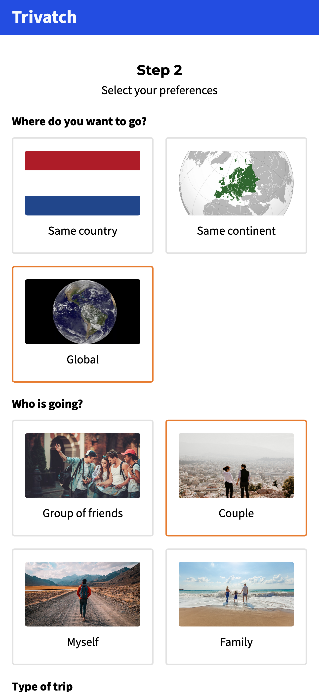

For this project I had the idea for a travel app which targeted to those between the ages of 18 and 50. Based on user choices, the app would show suited destinations for holidays. I designed the app's wireframes to bring my concept to life, starting with the user account setup, preference choosing, and recommendations display pages.
My focus for this project was primarily on the back-end development, as I wanted to experiment with new technologies. As a result, the app's designs remained minimalistic and simple. In exploring different template engines, In the beginning I chose EJS due to its beginner-friendly reputation. However, after encountering some syntax difficulties, I switched to Handlebars, which offered a more intuitive syntax and it was more popular than EJS according to multiple sources.

To enable data storage and retrieval, I used MongoDB as the app's database system. First I tried using the MongoDB extension instead of Mongoose, I later realized the limitations and challenges in finding support for MongoDB's own extension. Nonetheless, I successfully implemented functionality that allowed users to add trips to the database, including uploading photos using Multer. Additionally, users could receive recommendations based on their preferences by submitting a form and retrieving data from the database.
For this project I also had to use different API’s. Therefore I explored the Geolocation API and Reverse Geocoding API for location-based features but faced difficulties in implementation. As a solution, I switched to utilizing the Local Storage API to enable seamless data transfer between pages, such as storing and retrieving the user's origin country selection. Additionally, I used progressive enhancement by implementing JavaScript to enhance user interactions, such as adding trips and displaying pop-up notifications.
Throughout the development process, I had challenges in understanding backend concepts, APIs, and data integration. However, through research, seeking help from teachers and student assistants, and using online resources like YouTube tutorials, I overcame obstacles and deepened my understanding. During this project I have made significant progress in achieving the project goals and enhancing my skills in frontend and backend development.